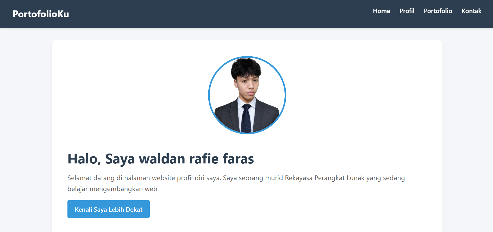

Halo, Saya waldan rafie faras
Selamat datang di halaman website profil diri saya. Saya seorang murid Rekayasa Perangkat Lunak yang sedang belajar mengembangkan web.
Kenali Saya Lebih DekatTentang Saya
Halo! Saya adalah seorang murid kelas XI di program keahlian Rekayasa Perangkat Lunak. Saya memiliki ketertarikan yang tinggi di bidang teknologi, khususnya dalam pengembangan website dan logika pemrograman. Tujuan saya adalah terus mengasah keterampilan agar menjadi seorang Software Engineer yang handal di masa depan.
Keahlian Saya
- Dasar-dasar HTML5 & CSS3
- Desain Antarmuka (Figma / Wireframe)
- Manajemen Basis Data Sederhana
Hobi
- Coding & Eksplorasi Teknologi Baru
- Mendesain Website Sederhana
- Membaca Artikel Teknologi & Bermain Game Strategi
Proyek Saya
Berikut adalah beberapa proyek awal yang pernah saya buat selama proses pembelajaran di sekolah:

Website Portofolio Pribadi
Mengembangkan situs web portofolio sebagai wadah dokumentasi proyek, pengalaman belajar, dan keterampilan teknis yang saya miliki, dibangun dengan struktur HTML yang semantik dan styling CSS yang responsif.

Aplikasi Kalkulator Sederhana (Python)
Mengembangkan program kalkulator berbasis teks/GUI yang berfungsi untuk melakukan perhitungan aritmatika dasar (penjumlahan, pengurangan, perkalian, dan pembagian) sebagai bentuk latihan logika pemrograman dasar.
Kontak & Media Sosial
Mari terhubung! Anda dapat menghubungi saya melalui beberapa platform di bawah ini:
- Email: waldanrafiefaras2009@gmail.com
- Instagram: @waldanrf_
- WhatsApp: +62 896-8232-2701